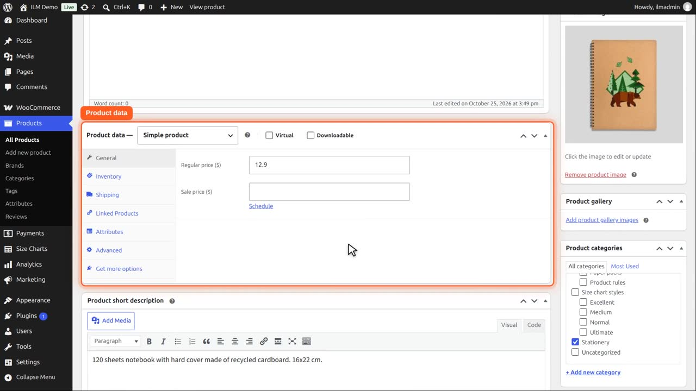
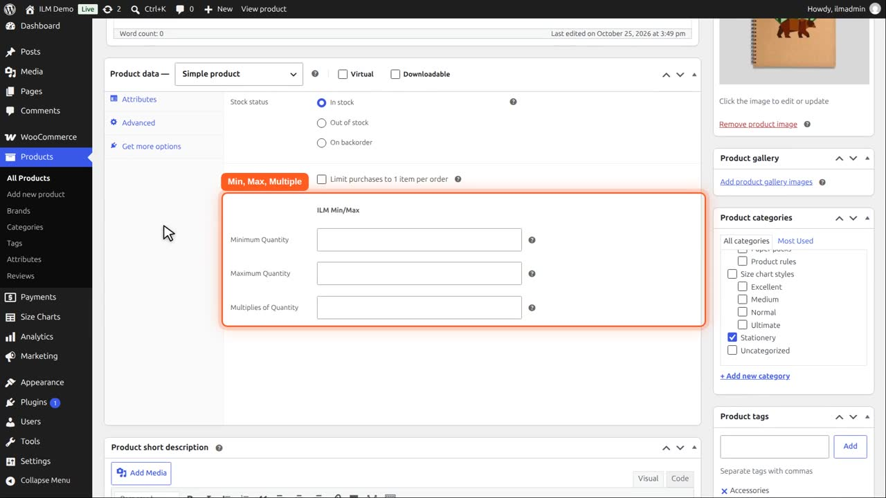
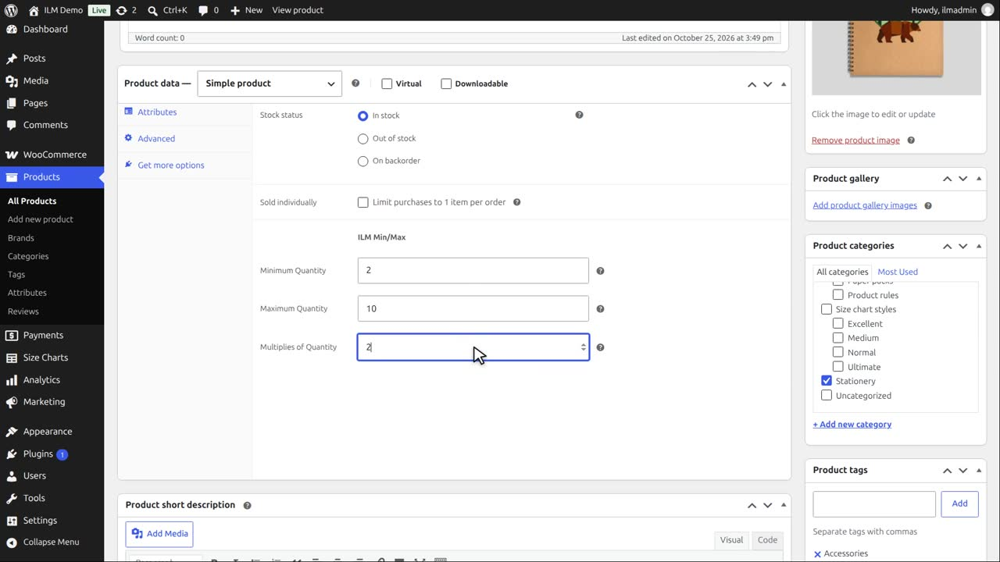
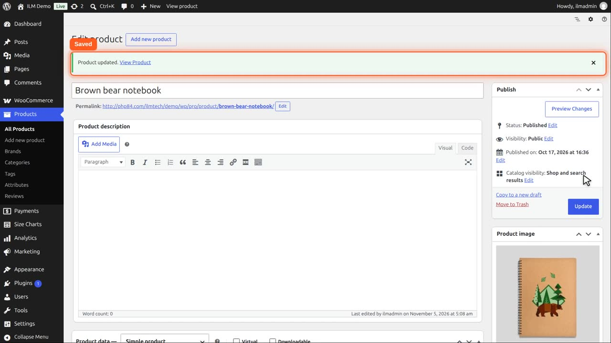

Open Products and edit the Brown bear notebook. Scroll to the Product data box.

On the Inventory tab, the plugin adds three fields: minimum, maximum and multiple quantity.

We type a minimum of two, a maximum of ten, in steps of two.

Click Update. The values are saved as the product rule, the same one you see in the rule table.

In ILM Min Max, the rule table shows the same values. Change them in either place.
And the product page shows minimum order two, maximum order ten, and the box steps in pairs. Variable products have the same fields on every variation.